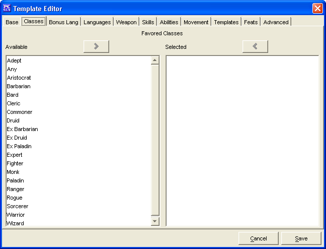

The Classes Tab is used to add Favored Classes for the Template being created.
The two Favored Classes windows, Available and Selected are used to create a list of Favored Classes.
The Cancel and Save buttons, which appear on every tab, are used to either cancel the Template creation or save it to the customTemplates.lst file.